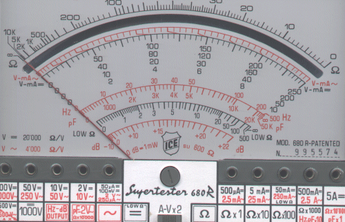

Ejemplo: Para un voltímetro "clase
2" en la escala de rango 0- 250 V el fabricante asegura una Precisión
Porcentual Absoluta del 2%.
Por lo tanto el error absoluto en esa escala será: 2% · 250 =
± 5V.

Una medida de voltaje en la que obtenemos el valor de 230 V tiene una imprecisión de ± 5V. En esa misma escala una medida de 20 V tendrá la misma imprecisión, ± 5V.
Por lo tanto el error relativo (porcentual relativo) es mucho mayor en la parte
baja de la escala: 5 / 20, que en la parte alta de la escala, 5 / 230 (aprox.
2%).
¡Por eso, siempre que puedas, debes cambiar de escala
para que la lectura caiga en la parte alta de la misma!
En este polímetro la sensibilidad del aparato (la menor división)
en la escala 0- 250 es 5V (ver la figura anterior arriba) y coincide con la
precisión.
La precisión del aparato influye en la imprecisión con que expresamos
el resultado de la medida.